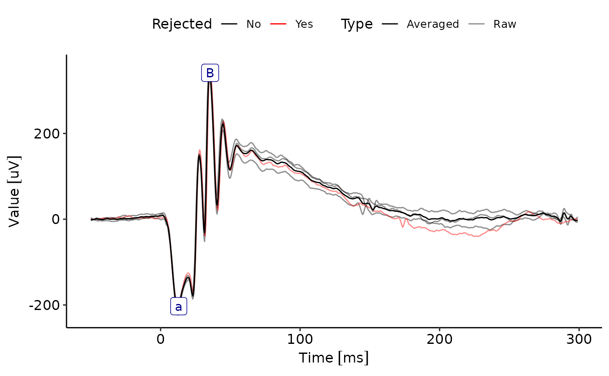
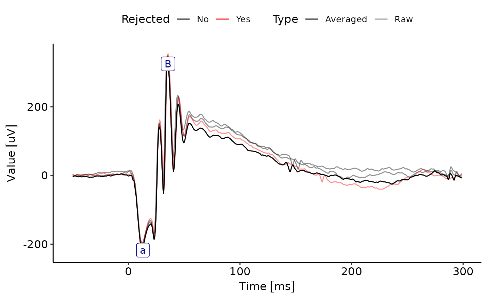

UpdateProcessingMethods.RdThese methods are used to set filter, rejection and averaging functions for ERGExam objects. They allow setting the functions to a subset of recordings based on the specified conditions.
# S4 method for ERGExam
FilterFunction(X, where) <- value
# S4 method for ERGExam
Rejected(X, where) <- value
# S4 method for ERGExam
AverageFunction(X, where) <- value
SetStandardFunctions(
X,
Stimulus.type.names = pairlist(Flash = "Flash", Flicker = "Flicker")
)An ERGExam object
A base::list defining selection criteria. Tags/Keys in the names in the list must represent valid column names of Metadata orStimulusTable.
A value (usually a function) to set.
A base::pairlist specifying the names identifying the different stimulus types, e.g., Flash="Flash" or Flash="Blitz".
An updated ERGExan object.
FilterFunction(ERGExam) <- value: Update the FilterFunction for all Recordings in an ERGExam, or only those slected using where.
Rejected(ERGExam) <- value: Update the Rejected for all Recordings in an ERGExam, or only those slected using where.
AverageFunction(ERGExam) <- value: Update the AverageFunction for all Recordings in an ERGExam, or only those slected using where.
SetStandardFunctions(): This method is used to set standard functions for processing ERGExam data. It defines default functions for averaging, filtering, and signal rejection based on the stimulus type.
data(ERG)
ERG<-SetStandardFunctions(ERG)
ggERGTrace(ERG,where=list(Intensity=1,Channel="ERG",Eye="RE"))
#> Retrieving record values for the given time points.
#> ================================================================================
#> Retrieving record values for the given time points.
#> ================================================================================

AverageFunction(ERG,where=list(Intensity=1))<-min
ggERGTrace(ERG,where=list(Intensity=1,Channel="ERG",Eye="RE"))
#> Retrieving record values for the given time points.
#> ================================================================================
#> Retrieving record values for the given time points.
#> ================================================================================
